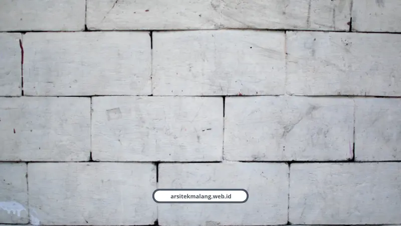

Ringkasan Inti
- Uji geoteknik Cone Penetration Test (sondir) wajib dilakukan untuk mengetahui daya dukung tanah lunak dan kedalaman lapisan keras (4–7 meter) sesuai SNI 8460:2017.
- Penerapan konsep split level dan cut and fill terbukti memangkas biaya dinding penahan tanah (retaining wall) hingga 25–35% dibanding perataan lahan penuh.
- Elemen wajib struktur meliputi pondasi dalam (strauss pile/bore pile), sloof bertingkat, kolom utama, kolom praktis per 3 meter, dan ring balok yang terikat monolitik tahan gempa.
- Sistem sub drainase dengan pipa weep hole dan lapisan geotextile mutlak dipasang untuk mencegah keruntuhan dinding akibat tekanan hidrostatik air tanah.
- Biaya konstruksi lahan miring berkisar 15–35% lebih tinggi, serta penambahan lantai atau penguatan struktur wajib memiliki izin PBG melalui portal SIMBG.
Daftar Isi Artikel
Membangun struktur rumah 2 lantai di lahan miring Malang butuh pondasi dalam, dinding penahan tanah, dan uji sondir sebelum mulai. Tanpa itu, risiko longsor dan penurunan bangunan mengintai di kemudian hari.
Saya sering dapat pertanyaan dari pemilik tanah di Dau, Karangploso, Pujon, sampai Buring. Intinya sama, tanahnya miring dan mereka takut rumahnya ambles atau retak.
Wajar sih takut. Tapi kalau ditangani dengan cara yang benar, lahan berkontur justru bisa jadi nilai jual tersendiri buat rumah 2 lantai.
Kenapa Lahan Miring Butuh Uji Tanah Dulu Sebelum Dibangun?
Karena karakteristik lapisan tanah di tiap titik lahan miring bisa beda jauh, meski jaraknya cuma beberapa meter. Uji tanah wajib dilakukan sebelum menentukan jenis pondasi.
Di kawasan Lawang misalnya, lapisan atas 0 sampai 2 meter umumnya berupa tanah lunak dengan nilai qc di bawah 50 kg per cm persegi. Sementara tanah kaku dan padat baru ditemukan di kedalaman 4 sampai 7 meter dengan qc 100 sampai 150 kg per cm persegi.
Makanya sebelum membangun struktur rumah 2 lantai, pengujian Cone Penetration Test atau sondir wajib dilakukan. Hasilnya dipakai buat menentukan daya dukung tanah dan kedalaman lapisan keras yang aman.
Sesuai SNI 8460:2017, perhitungan juga harus memasukkan beban mati, beban hidup sebesar 10 kPa, sampai beban gempa dengan periode ulang rencana. Bukan asal cor dan tumpuk material.
Bagaimana Cara Mengolah Lahan Berkontur Tanpa Boros Biaya?
Caranya dengan menggabungkan teknik cut and fill dan konsep split level mengikuti kontur alami tanah, bukan memaksakan lahan jadi rata sepenuhnya.
- Cut and fill, memindahkan tanah galian ke area urugan sesuai elevasi rencana
- Split level, beda tinggi antar ruangan setengah tingkat mengikuti kontur
- Retaining wall pasangan batu kali untuk tebing rendah di bawah 2,5 meter
- Retaining wall beton bertulang kantilever untuk tebing yang lebih tinggi
- Sistem sub drainase dengan weep holes PVC dan lapisan geotextile
Menariknya, penerapan split level dibanding meratakan lahan penuh bisa memangkas biaya dinding penahan tanah sampai 25 hingga 35 persen. Lumayan buat nekan anggaran.
Dinding penahan tanah wajib punya sistem sub drainase yang benar. Tanpa lubang sulingan air dan lapisan geotextile, tekanan hidrostatik air tanah bisa merobohkan dinding dari dalam.

Catatan Arsitek Malang
Jangan pernah membangun retaining wall tanpa pipa weep hole (lubang sulingan) dan saringan kerikil berbalut geotextile. Air hujan yang terperangkap di balik dinding menghasilkan tekanan hidrostatis raksasa yang menjadi penyebab 80% kegagalan struktur lereng saat musim hujan deras di Malang Raya.
Elemen Struktur Apa Saja yang Wajib Ada di Rumah 2 Lantai Lahan Miring?
Elemen wajibnya meliputi pondasi dalam, sloof dan tie beam bertingkat, kolom utama, kolom praktis, dan ring balok yang saling terikat jadi satu kesatuan.
Untuk pondasi, tipe strauss pile atau bore pile jadi pilihan utama di lahan miring permukiman. Diameter yang umum dipakai 30, 40, atau 50 cm, dan pengeboran manualnya tidak menimbulkan getaran yang merusak bangunan tetangga.
Sloof dan tie beam bertingkat berfungsi mengikat seluruh tumpuan pondasi. Bagian ini yang meratakan beban ke sub struktur bawah supaya tahan gaya geser lateral saat gempa.
Kolom praktis juga nggak boleh dilewatkan. Ukuran standarnya 10x10 cm, dipasang tiap jarak maksimum 3 meter pada dinding, supaya dinding pasang tidak retak melintang atau roboh saat terjadi guncangan.
Rozzaq Alfian Mustofa, peneliti Teknik Sipil dari Universitas Sunan Giri Surabaya, menegaskan pentingnya kedalaman pondasi berdasarkan data lapangan.
"Berdasarkan penyelidikan geoteknik CPT/sondir pada kondisi tanah di wilayah Malang, seperti kawasan Lawang, lapisan atas cenderung didominasi tanah lunak. Rekomendasi penggunaan pondasi dalam seperti Strauss Pile sangat tepat untuk menyalurkan beban struktur bangunan ke lapisan tanah padat di kedalaman 4 sampai 7 meter."
Margaretta Dwi Herawati dari Dinas Perumahan, Kawasan Permukiman dan Cipta Karya Kabupaten Malang juga menekankan soal standar tahan gempa.
"Kabupaten Malang merupakan daerah dengan tingkat kerawanan bencana yang cukup tinggi. Oleh karena itu, penerapan standar konstruksi tahan gempa adalah hal utama. Rumah bertingkat harus memiliki keterikatan struktur yang lengkap mulai dari sloof, kolom, hingga ring balok."
Berapa Selisih Biaya Membangun di Lahan Miring Dibanding Lahan Datar?
Biaya membangun di lahan berkontur umumnya 15 sampai 35 persen lebih tinggi dibanding lahan datar. Pekerjaan struktur bawah seperti cut and fill, retaining wall, dan pondasi dalam bisa menyerap 20 sampai 40 persen dari total anggaran.
Wildan, kontraktor dari Rebwild Construction, punya catatan penting soal pendekatan membangun di lahan miring.
"Membangun rumah di lahan miring tidak bisa menggunakan pendekatan konvensional. Langkah awal wajib berupa uji tanah untuk mengetahui sudut kemiringan lereng dan potensi longsor. Dinding penahan tanah dan pondasi khusus sangat krusial, dan pemilik rumah sebaiknya menyiapkan dana cadangan lebih."
Satu hal lagi yang sering kelewat, mengubah rumah 1 lantai jadi 2 lantai atau memperkuat struktur penahan beban di lahan miring itu tergolong renovasi struktural. Artinya wajib punya PBG lewat portal SIMBG Dinas PUPR, bukan opsional.
Bagaimana Cara Memastikan Struktur Rumah Aman Sebelum Mulai Bangun?
Caranya dengan melibatkan tim yang paham perhitungan struktur sejak tahap desain, bukan baru dicek setelah pondasi tertanam.
Detail seperti dimensi kolom, jarak kolom praktis, dan kedalaman pondasi harus dihitung presisi berdasarkan hasil sondir, bukan kira-kira di lapangan.
Kalau Anda masih di tahap merancang layout ruangan sebelum bicara struktur, pembahasan kami soal jasa arsitek rumah 2 lantai bisa jadi titik awal yang lebih pas untuk memetakan kebutuhan ruang dan anggaran secara keseluruhan.
Lahan miring bukan halangan buat punya rumah 2 lantai yang kokoh, asal prosesnya dimulai dari uji tanah, bukan dari cor pondasi. Pondasi dalam, retaining wall, dan pengikat struktur lengkap adalah paket yang tidak bisa ditawar.
Tim kami terbiasa menangani lahan berkontur di kawasan Dau, Karangploso, Pujon, sampai Batu dengan gambar kerja terstandarisasi IAI dan STRA. Cek layanan lengkap kami untuk konsultasi struktur gratis via WhatsApp di 088989643555.
Konsultasikan Struktur Rumah Lahan Miring Anda
Diskusikan kebutuhan uji sondir, perhitungan retaining wall, dan DED struktur tahan gempa bersama tim ahli Arsitek Malang.

Naura Regyna Putri
Penulis & Tim Riset Arsitektur Maroon Arsitek Malang, spesialis struktur bangunan bertingkat, geoteknik lereng Malang Raya, dan pengurusan PBG/SIMBG.